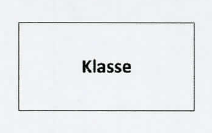
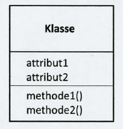
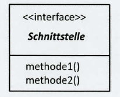
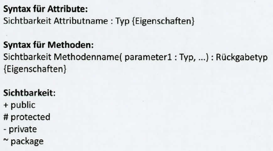
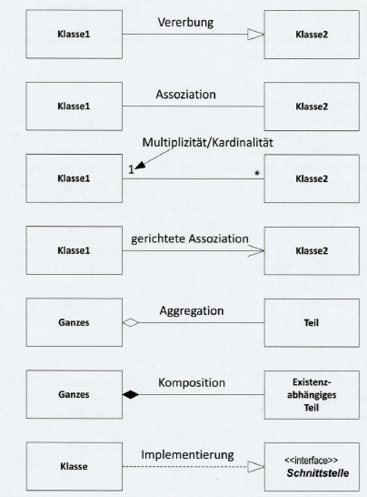

Objektorientierte Programmierung
Santa Maria, Schiff von Kolumbus 1492, Wikimedia Commons, vermutlich von Edward H. Hart, public domain
Mayflower, 1620, Wikimedia Commons, CC0 1.0 public domain
RMS Titanic 1912, Francis Godolphin Osbourne Stuart gest. 1923, Wikimedia Commons, public domain
Grundpfeiler der objektorientierten Programmierung (OOP) verstehen und anwenden können:
Zugriffsmodifikatoren bestimmen, wo auf Klassen, Methoden und Variablen zugegriffen werden kann.
| Zugriffs- modifikator |
Symbol |
|---|---|
public |
+ |
private |
- |
protected |
# |
package |
~ |
| Bedeutung |
|---|
| Zugriff überall erlaubt, sowohl innerhalb als auch außerhalb der Klasse |
| Zugriff nur innerhalb der Klasse erlaubt, in der sie definiert sind |
| Zugriff nur innerhalb der Klasse, des Pakets und von abgeleiteten Klassen erlaubt |
| Zugriff ist innerhalb der Klasse und in allen Klassen desselben Pakets erlaubt |
| Zugriffs- modifikator |
Symbol | Bedeutung | Verwendung |
|---|---|---|---|
private |
- | Zugriff nur innerhalb der Klasse erlaubt, in der sie definiert sind | Attribute |
public |
+ | Zugriff überall erlaubt, sowohl innerhalb als auch außerhalb der Klasse | Operation / Methode |
+------------------------------+
| Konto |
|------------------------------|
| - kontostand: double |
|------------------------------|
| + getKontostand(): double |
| + einzahlen(betrag: double) |
| + abheben(betrag: double) |
+------------------------------+private) zugreifen und ihn verändernpublic-Methoden einzahlen() und abheben(), die eine Validierung durchführenKLASSE Konto
PRIVAT kontostand: Zahl
OEFFENTLICH METHODE getKontostand(): Zahl
RUECKGABE kontostand
ENDE METHODE
OEFFENTLICH METHODE einzahlen(betrag: Zahl)
WENN betrag > 0 DANN
kontostand = kontostand + betrag
SONST
ausgabe("Ungültiger Betrag!")
ENDE WENN
ENDE METHODE
OEFFENTLICH METHODE abheben(betrag: Zahl): Wahrheitswert
WENN betrag > 0 UND betrag <= kontostand DANN
kontostand = kontostand - betrag
RUECKGABE WAHR
SONST
ausgabe("Nicht genuegend Guthaben!")
RUECKGABE FALSCH
ENDE WENN
ENDE METHODE
ENDE KLASSE +----------------------------+
| Fahrzeug |
|----------------------------|
| # marke: String |
| # baujahr: int |
|----------------------------|
| + beschreibung(): String |
+----------------------------+
^ ^
| |
erbt von erbt von
| |
+--------------------------+ +----------------------------+
| PKW | | LKW |
|--------------------------| |----------------------------|
| - anzahlSitze: int | | - ladekapazitaet: int |
|--------------------------| |----------------------------|
| + beschreibung(): String | | + beschreibung(): String |
+--------------------------+ +----------------------------+
PKW und LKW erben von Fahrzeugprotected-Attribute marke und baujahranzahlSitze bzw. ladekapazität)Oberklasse (Superklasse) – Klasse, von der geerbt wird
Unterklasse (Subklasse) – Klasse, die erbt
super – Zugriff auf Methoden/Konstruktor der Oberklasse
Ist-ein-Beziehung – PKW ist ein Fahrzeug (Vererbung)
Hat-ein-Beziehung – Fahrzeug hat einen Motor (Komposition, keine Vererbung)
Durch Vererbung müssen gemeinsame Attribute (marke, baujahr) und Methoden nur einmal in der Elternklasse definiert werden.
Kindklassen fügen spezifische Attribute hinzu und können Methoden überschreiben.
Definition: Polymorphie (Vielgestaltigkeit) bedeutet, dass Objekte verschiedener Klassen über eine gemeinsame Schnittstelle angesprochen werden können und sich unterschiedlich verhalten.
| Art | Beschreibung | Beispiel |
|---|---|---|
| Überladen (Overloading) | Gleicher Methodenname, verschiedene Parameter | berechne(a) und berechne(a, b) |
| Überschreiben (Overriding) | Kindklasse überschreibt Methode der Elternklasse | Hund.sprechen() statt Tier.sprechen() |
KLASSE Tier
METHODE sprechen(): String
RUECKGABE "..."
ENDE METHODE
ENDE KLASSEKLASSE Hund ERBT VON Tier
METHODE sprechen(): String
// überschreibt Tier.sprechen()
RUECKGABE "Wau!"
ENDE METHODE
ENDE KLASSEKLASSE Katze ERBT VON Tier
METHODE sprechen(): String
// überschreibt Tier.sprechen()
RUECKGABE "Miau!"
ENDE METHODE
ENDE KLASSE// tiere: Liste von Tier = [neuer Hund(), neue Katze()]
FUER JEDES t IN tiere
ausgabe(t.sprechen())
// "Wau!", "Miau!"
ENDE FUERKLASSE Rechner
METHODE addiere(a: Zahl, b: Zahl): Zahl
RUECKGABE a + b
ENDE METHODE
METHODE addiere(a: Zahl, b: Zahl, c: Zahl): Zahl // überladene Methode
RUECKGABE a + b + c
ENDE METHODE
ENDE KLASSEDefinition: Ein Interface (Schnittstelle) definiert eine Menge von Methodensignaturen, die eine implementierende Klasse umsetzen MUSS. Ein Interface enthält keinen eigenen Code (keine Implementierung).
Pseudocode:
+-------------------+
| <<interface>> |
| Druckbar |
|-------------------|
| |
|-------------------|
| + drucke(): void |
+-------------------+
^
|
implementiert
|
+-------------------+
| Rechnung |
|-------------------|
| + drucke(): void |
+-------------------+| Kriterium | Interface | Abstrakte Klasse |
|---|---|---|
| Implementierung | Keine (nur Signaturen) | Kann Methoden mit Code enthalten |
| Mehrfachvererbung | Ja (Klasse kann mehrere Interfaces implementieren) | Nein (nur eine Elternklasse) |
| Attribute | Keine (nur Konstanten) | Ja |
| Konstruktor | Nein | Ja |
| Einsatz | Vertrag / Schnittstelle definieren | Gemeinsame Basis mit Teilimplementierung |
+-------------------+ +-------------------+
| <<interface>> | | <<abstract>> |
| Druckbar | | Dokument |
|-------------------| |-------------------|
| | | # titel: String |
|-------------------| |-------------------|
| + drucke(): void | | + drucke(): void | (abstrakt)
+-------------------+ | + speichere() | (implementiert)
^ +-------------------+
| ^
| |
implementiert erbt von
| |
+-------------------+ +-------------------+
| Rechnung | | Rechnung |
|-------------------| |-------------------|
| + drucke(): void | | + drucke(): void |
+-------------------+ +-------------------+



+----------------------------+
| Haustier |
|----------------------------|
| - name : String |
| - energie : int |
|----------------------------|
| + spielen() : void |
| + ausruhen() : void |
+----------------------------+
^ ^
| |
| |
+----------------+ +----------------+
| Hund | | Katze |
|----------------| |----------------|
| + spielen() | | + spielen() |
| + ausruhen() | | + ausruhen() |
+----------------+ +----------------+
Definition Kardinalitäten = Multiplizitäten: Wie viele Instanzen einer Klasse können mit einer Instanz einer anderen Klasse in Beziehung stehen?
| Schreibweise | Bedeutung | Erklärung |
|---|---|---|
0..* oder * |
Null bis beliebig viele | Die Beziehung ist optional. Es können keine oder unendlich viele Objekte verknüpft sein. |
1..* |
Eins bis beliebig viele | Mindestens ein Objekt muss existieren (Pflichtbeziehung). |
0..1 |
Null oder eins | Optional, aber maximal ein Objekt (z. B. ein Profil für einen Nutzer). |
1 oder 1..1 |
Genau eins | Exakt ein Objekt muss verknüpft sein |
n..m, z. B. 2..5 |
Bestimmte Spanne | Mindestens n und maximal m Objekte |
Quelle: Kakashi-Madara, Wikimedia Commons
Das Klassendiagramm zeigt Klassen, ihre Attribute und Methoden sowie Beziehungen zwischen Klassen.
Viel Erfolg!